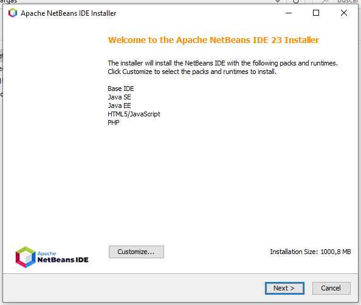
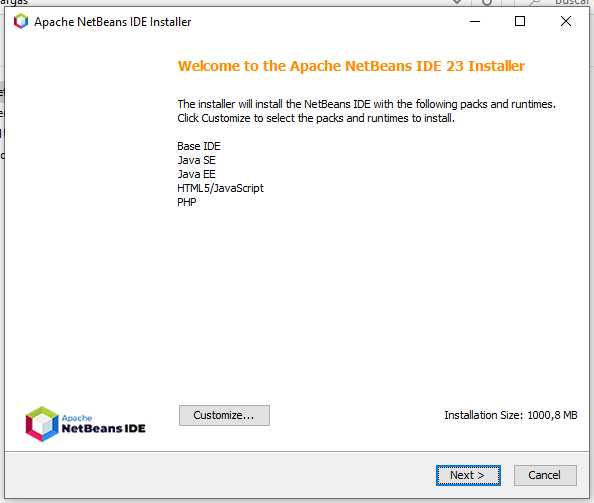

|
Menú Superior (Barra de Menús):
|

|
Barra Lateral Izquierda (Herramientas principales):
|
|
 


|

|
Incidencia 1: El JDK es un conjunto de herramientas de desarrollo de software necesarias para construir aplicaciones Java. NetBeans IDE depende del JDK para funcionar correctamente. El mensaje de error indica que el JDK no está instalado en la computadora o que el instalador no puede encontrarlo.

Solución: Para solucionar este problema, debes descargar e instalar el JDK 8 o una versión más reciente desde el sitio web de Oracle. Una vez que el JDK esté instalado, puedes volver a ejecutar el instalador de NetBeans IDE JDK Development.


|

|

|

|


Ya podrás iniciar el Launcher y comenzar a usar Eclipse para tus proyectos Java.


| Características | Eclipse | NetBeans |
|---|---|---|
| Ventajas |
- Multiplataforma y de código abierto: Compatible con Windows, macOS y Linux. - Altamente extensible con un sistema de plugins robusto. - Ideal para Java, diseñado inicialmente para este lenguaje. - Soporte para múltiples lenguajes como C/C++, Python, PHP y más. - Gran comunidad y documentación: Amplio soporte con guías y foros. |
- Gratis y de código abierto: Compatible con Windows, macOS y Linux. - Soporte nativo para múltiples lenguajes como Java, PHP, HTML5, JavaScript, y más. - Interfaz sencilla y funcional: Ideal para principiantes. - Integración con herramientas de desarrollo como Maven, Gradle y Git. - Depurador visual muy intuitivo y fácil de usar. |
| Inconvenientes |
- Interfaz anticuada en comparación con otros IDE. - Pesado y lento: Puede consumir muchos recursos en proyectos grandes. - Curva de aprendizaje alta para personalización y configuración inicial. |
- Menos extensible en comparación con Eclipse. - Puede volverse lento en proyectos complejos. - Menor comunidad de soporte que Eclipse o IntelliJ IDEA. |
| Características | IntelliJ IDEA | Visual Studio Code |
|---|---|---|
| Ventajas |
- Interfaz moderna y atractiva, fácil de usar incluso para principiantes. - Rendimiento superior, rápido y eficiente para proyectos grandes. - Características inteligentes como autocompletado avanzado y refactorización precisa. - Soporte integrado para frameworks como Spring, Hibernate, Kotlin, Android, y más. - Edición de código productiva con herramientas diseñadas para optimizar el tiempo de desarrollo. |
- Gratis y de código abierto, mantenido por Microsoft. - Ligero y rápido: Más liviano que los IDE completos. - Extensibilidad con una amplia variedad de extensiones para lenguajes, herramientas y frameworks. - Soporte para múltiples lenguajes como JavaScript, Python, Java, C#, Go, entre otros. - Excelente para desarrollo web con características avanzadas para JavaScript, TypeScript, HTML y CSS. |
| Inconvenientes |
- Coste: La versión Ultimate (con todas las características) es de pago; solo la versión Community es gratuita. - Exigente en recursos, especialmente en máquinas más antiguas. - Menor soporte para lenguajes no relacionados con Java. |
- No es un IDE completo: Es un editor de texto avanzado, pero carece de algunas características nativas de los IDE. - Requiere configuración para igualar las capacidades de un entorno de desarrollo completo. |